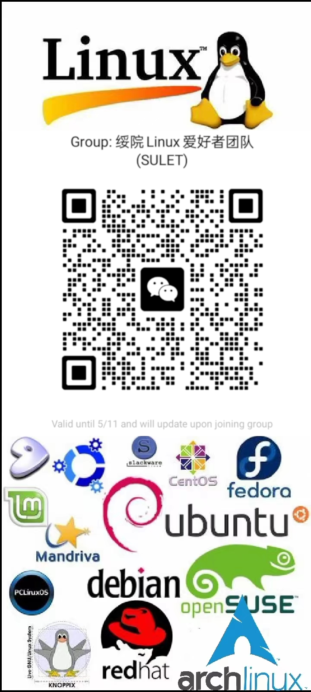

i3wm主题更新(2024-05-05 14:51:00)
我把i3wm主题配置更新了一下, 通过把i3配置文件中自启动相关的加上了--no-startup-id参数, 解决了启动之后鼠标一直转圈的问题, 修改了polybar配置, 解决了polybar系统托盘显示位置不固定的问题, 项目参见Linux软件和配置文件分享
/My_i3wm_theme_configure.md
绥院Linux爱好者团队全新升级(2024-05-03 17:52:00)
为方便大家交流学习, 绥院Linux爱好者团队全面升级, 启用多平台交流群, 包括QQ, 微信等, 建立了github仓库统一上传文件, 并且建立了官方网站, 欢迎大家加入, 学习交流
简介
新的绥院Linux爱好者团队是以QQ群和官网为主体, 多种交流平台共存的大型交流互助社区, 用户可以选择加入自己方便的平台进行交流, 目前支持QQ, 微信, 使用官网统一发布官方动态，使用github团队仓库或者123云盘统一分享文件, 仓库为
https://github.com/Linux-SHXY
, 官网为
linux-shxy.github.io"
信息的发布
官方信息将会在官网发布, 以链接的形式转发到各个群里, 官网博客的仓库位置为linux-shxy.github.io/blog.html/, 添加动态时只需按本文格式在上一个动态的上面添加新的内容即可
文件的分享
分享文件可上传到仓库sulet中的对应目录里, 原文件需要压缩后上传到对应目录里, 为避免网络问题, 也可以存成txt文件, 里面附上文件的简单介绍和123云盘链接, 绥院Linux爱好者团队秉持开源互助共享原则，上传文件要标明文件名称。上传多个文件最好采用压缩文件格式，推荐采用tar类型的压缩方式，不建议使用rar进行压缩，但是如果在其他地方遇到rar压缩文件也要学会自行解压。
rar是一个专有的文件格式，有严格的版权限制，而且不论什么平台都要另安装专门的软件才能访问和解压，不能直接打开。大部分linux系统是不预装rar相关的软件，这就造成了rar文件在新装的linux系统下无法打开，不方便分享交流。
具体的Linux压缩解压命令可以查看 常用Linux命令/tar.txt 文件。tar.txt文件列出的是一些较为全面的压缩方式，要求灵活运用tar命令。
大于100Mb的文件可以上传到123云盘进行分享。123云盘网址:
https://www.123pan.com/
在浏览器输入网址，注册登录后方可使用。将文件上传到云盘，点击分享，需要将分享有效期设为永久有效。
复制分享链接。
新建一个TXT文件，标明文件名称。内容包括分享链接，提取码，以及必要的文字说明。
QQ群:
微信群: